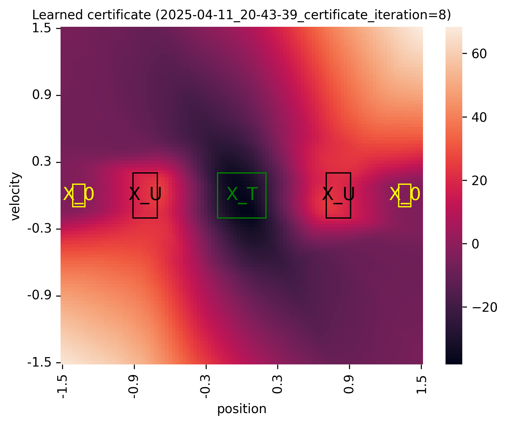
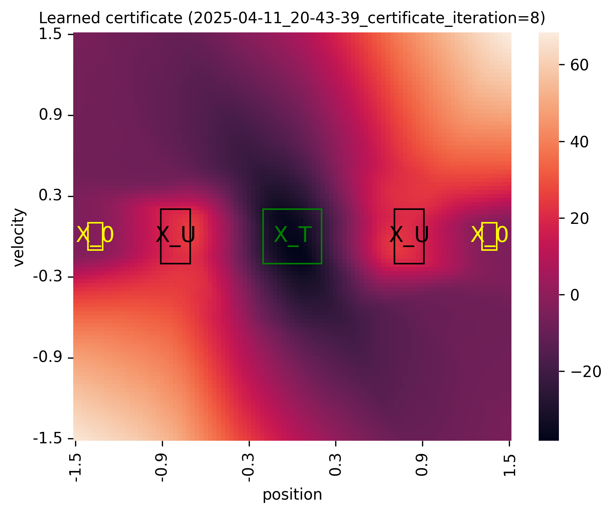
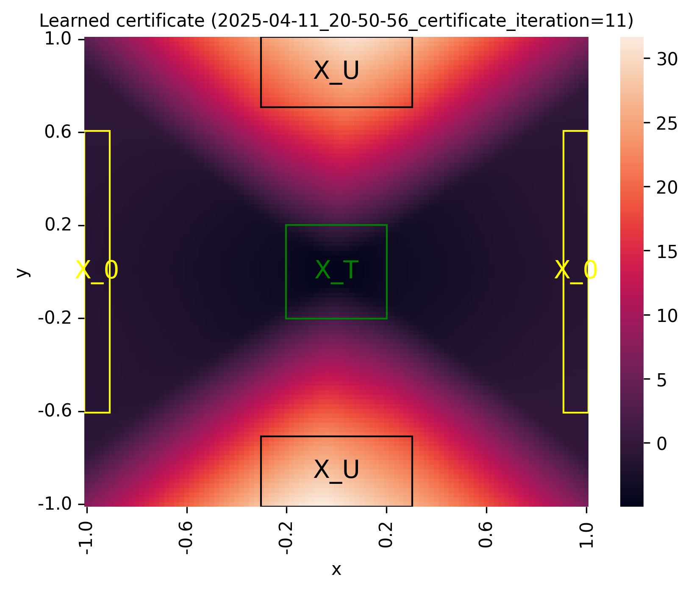
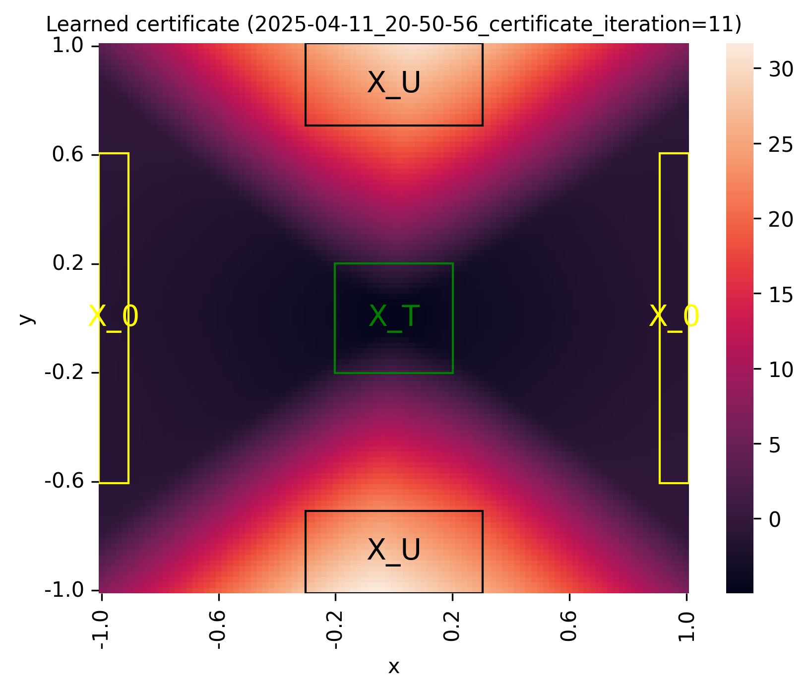
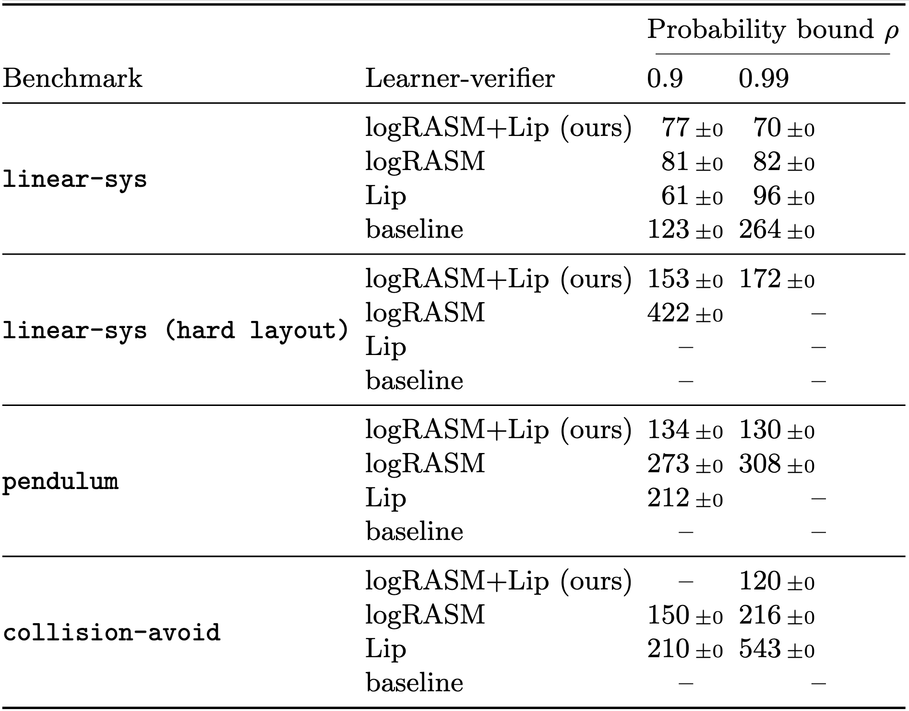
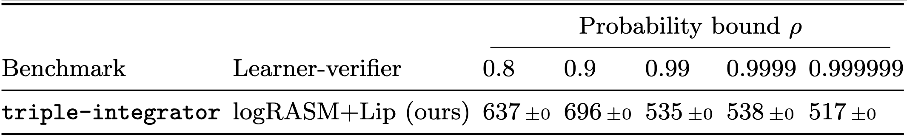

Policy Verification in Stochastic Dynamical Systems Using Logarithmic Neural Certificates
This repository contains the supplementary code for the paper:
[1] Policy Verification in Stochastic Dynamical Systems Using Logarithmic Neural Certificates by Thom Badings, Wietze Koops, Sebastian Junges, and Nils Jansen (CAV 2025)
This paper proposes techniques that make the verification of neural network policies in stochastic dynamical systems more scalable. In this artifact, we implement these techniques in a learner-verifier framework for verifying that a given neural network policy satisfies a given reach-avoid specification. The learner trains another neural network, which acts as a certificate proving that the policy satisfies the task. The verifier then checks whether this neural network certificate is a so-called logarithmic reach-avoid supermartingale (logRASM), which suffices to show reach-avoid guarantees. For more details about the approach, we refer to the paper above.
Table of contents
A note on CUDA / GPU acceleration
This code is written in JAX and can be run on GPU with CUDA. We provide a Docker container with CUDA support enabled (see step 2 below). While we have tested the Docker container on multiple systems (listed below), running JAX code with GPU acceleration within a Docker container can be tricky to set up. If you encounter problems, feel free to open an issue on GitHub or send an email (thombadings@gmail.com).
The Docker container with GPU support enabled has been tested on:
Linux 6.1.0-23-amd64, running Debian GNU/Linux 12, Cuda version 12.5, NVIDIA driver version 555.42.06.
Linux 6.8.0-49-generic, running Ubuntu 22.04.5 LTS, Cuda version 12.4, NVIDIA driver version 550.120.
NOTE: GPU acceleration with JAX is only fully supported via CUDA. The support of JAX for Apple GPUs is only experimental and is not enough to run our code. To reproduce the results form [1] in reasonable time, running our code with GPU acceleration is necessary. More details can be found in the JAX installation guide.
1. What does this code do?
While we refer to the paper [1] for details, we briefly explain what our code computes. In a nutshell, given
a stochastic dynamical system, and
a reach-avoid specification, i.e., a tuple $(X_T, X_U, \rho)$ of a set of target states $X_T \subset X$, a set of unsafe states $X_U \subset X$, and a probability bound $\rho \in (0,1)$,
the code tries to learn a (neural network) policy that, when deployed on this system, satisfies the reach-avoid specification. This is done by learning a formal certificate, called a logarithmic reach-avoid supermartingale (logRASM), which is represented as a neural network. Finding a logRASM is a sufficient proof for the satisfaction of the specification. Our code implements an iterative learner-verifier framework that tries to find a RASM for the given inputs. If a valid RASM is found, our code terminates and returns the RASM as proof that the specification is satisfied.
2. Run from a Docker container (preferred)
The preferred way to run our code is by using the Docker container that we provide. Our Docker container is built upon Ubuntu, on top of which we install Miniconda, JAX, and the other Python dependencies (see the Dockerfile in this artifact for details).
NOTE: On Ubuntu, Docker binds by default to a socket that other users can only access using sudo. Thus, it may be necessary to run Docker commands using sudo. Alternatively, one can follow this guide on the Docker website to avoid having to run with sudo.
Step 1: Pull or download the Docker container
We assume you have Docker installed (if not, see the Docker installation guide). Then, run:
docker pull thombadings/lograsm:v1
Or in case you downloaded this container from an (unpacked) archive (loading the container can take a few minutes):
docker load -i cav25_lograsm.tar
Our implementation is written in JAX and can be accelerated by running on an NVIDIA GPU with CUDA. If you want to run with GPU acceleration, you can continue with step 2a; otherwise, you can continue with step 2b.
NOTE: The Docker container above is built for AMD and X86 architectures. In addition, we also provide an ARM version of the container, which can be pulled from Docker Hub via
thombadings/lograsm:v1-armor loaded viacav25_lograsm-arm.tar. However, the ARM version of the container is not compatible with CUDA. Therefore, the runtimes with the ARM version are not representative of [1], and we recommend using the AMD / X86 version with GPU acceleration for serious benchmarking.
Step 2a: Run with GPU acceleration
To run with GPU acceleration, you need to install:
The NVIDIA GPU driver and CUDA toolkit (see the introduction of the ReadMe for the versions we have tested on)
The NVIDIA Container Toolkit
We assume you already have the NVIDIA GPU driver and CUDA toolkit installed. The CUDA toolkit can be installed from the NVIDIA website.
Instructions for installing the NVIDIA container toolkit can be found here. For example, on Ubuntu or Debian, you can install the NVIDIA Container Toolkit as follows:
curl -fsSL https://nvidia.github.io/libnvidia-container/gpgkey | sudo gpg --dearmor -o /usr/share/keyrings/nvidia-container-toolkit-keyring.gpg \
&& curl -s -L https://nvidia.github.io/libnvidia-container/stable/deb/nvidia-container-toolkit.list | \
sed 's#deb https://#deb [signed-by=/usr/share/keyrings/nvidia-container-toolkit-keyring.gpg] https://#g' | \
sudo tee /etc/apt/sources.list.d/nvidia-container-toolkit.list
sudo apt-get update
sudo apt-get install -y nvidia-container-toolkit
sudo nvidia-ctk runtime configure --runtime=docker
sudo systemctl restart docker
To verify the NVIDIA Container Toolkit installation, you can run:
sudo docker run --rm --runtime=nvidia --gpus all ubuntu nvidia-smi
To use the docker container with GPU acceleration, open a terminal and navigate to the folder that you want to use to synchronize results. Then, run the following command:
docker run --gpus all --runtime=nvidia --mount type=bind,source="$(pwd)",target=/home/lograsm/output -it thombadings/lograsm:v1
Step 2b: Run without GPU acceleration
All experiments in [1] are run on a GPU, and we do not recommend performing serious benchmarking without GPU acceleration. However, you can run the Docker container without GPU acceleration as well (be aware of significantly higher run times).
To use the docker container without GPU acceleration, open a terminal and navigate to the folder that you want to use to synchronize results. Then, run the following command:
docker run --mount type=bind,source="$(pwd)",target=/home/lograsm/output -it thombadings/lograsm:v1
Step 3: Running the code
After starting the Docker container with (step 2a) or without (step 2b) GPU acceleration, you will see a prompt inside the docker container. The README in this folder is what you are reading. Now, you are ready to run the code for a single model (Section 4) or to replicate the experiments presented in [1] (Section 5).
3. Installing from source
For standard usage, we recommend using the Docker container, but you can also build our tool from source. We recommend installing in a conda environment; however, other installation methods are also possible. Below, we list the steps needed to install via (Mini)conda.
Step 1: Install Miniconda
Download Miniconda, e.g., using the following commands (see here for details):
mkdir -p ~/miniconda3
wget https://repo.anaconda.com/miniconda/Miniconda3-latest-Linux-x86_64.sh -O ~/miniconda3/miniconda.sh
bash ~/miniconda3/miniconda.sh -b -u -p ~/miniconda3
rm -rf ~/miniconda3/miniconda.sh
Then, initialize Miniconda using the following commands (and close and re-open the terminal):
~/miniconda3/bin/conda init bash
~/miniconda3/bin/conda init zsh
Step 2: Create a new conda environment
The following command creates a new conda environment, specifically with Python version 3.12:
conda create -n lograsm python=3.12
conda activate lograsm
Next, proceed with either step 3a or 3b (for installing with or without GPU acceleration via CUDA, respectively).
Step 3: Installing dependencies
Our implementation uses Jax, which, in turn, can use GPU acceleration via CUDA. However, installing CUDA can be tricky in some cases. Thus, we recommend installing via Conda. To install JAX with acceleration, run
pip install --upgrade "jax[cuda12]"
To install JAX without GPU acceleration, run
pip install --upgrade jax
Then, install the remaining requirements:
pip3 install -r requirements.txt
4. Running for a single benchmark (smoke test)
The main Python file to run the code is run.py.
See Section 6 of this ReadMe for a full overview of the available input arguments.
A minimal command to train and verify a neural network policy is:
python run.py --model <benchmark> --probability_bound <bound> --pretrain_method <algorithm> --pretrain_total_steps <steps> --mesh_loss <mesh_loss>
In this command, <benchmark> specifies the benchmark to run, <bound> is the probability bound of the reach-avoid specification, <algorithm> is the method used to pretrain the
input neural network policy for the specified number of steps <steps>, and <mesh_loss> specifies the discretization cell width used in the learner’s loss function (see below
for
the options).
Smoke test
The following example can be run to verify if the code runs correctly. If the code runs on GPU, you should see Running JAX on device: gpu in the terminal output (after the
overview of the arguments):
python run.py --model LinearSystem --probability_bound 0.9999 --pretrain_method PPO_JAX --pretrain_total_steps 100000 --mesh_loss 0.001 --exp_certificate
This example first pretrains a policy on the linear-sys benchmark for 100k steps using PPO and exports this policy as a checkpoint to the folder ckpt/. Then, this policy is
given as input to the learner-verifier framework, which trains a logRASM that verifies a reach-avoid specification with a probability bound of $\rho = 0.9999$.
Expected runtime for this command: 1 minute on GPU, or 3 minutes on CPU.
Expected result: A folder
output/date=<datetime>_model=LinearSystem_p=0.9999_seed=1_alg=PPO_JAXis created, in which the following results are stored:<datetime>_certifcate_Iteration0.pdf/.pngshows the learned logRASM:
info.csvsummarizes the most important info of the run (e.g., benchmark name, probability bound, total runtime, etc.)args.csvcontains a full overview of all arguments used by the run -times.csvlists the runtimes of each iteration and step of the run
Upon termination of the framework, the learned certificate is exported to the corresponding subfolder in output/, together with figures and CSV files
that summarize other relevant statistics of the run.
Validating results
The file validate_certificate.py can be used to check the validity of a learned RASM empirically.
This validation can be called automatically upon termination of the learner-verifier by adding the argument --validate to the run.py script.
Alternatively, the validation can be called externally on a given checkpoint as follows:
python validate_certificate.py --checkpoint 'output/.../final_ckpt/' --cell_width 0.01
Here, --checkpoint should be given the path to the exported final checkpoint (stored in output/<folder-of-run>/), and --cell_width is the mesh size for the (uniform)
discretization used to validate the RASM empirically.
It is also possible to directly perform the validation for all checkpoints in a given directory:
python validate_certificate.py --check_folder 'output/subfolder-with-multiple-checkpoints/' --cell_width 0.01
Several other arguments can be passed; see validate_certificate.py for the full overview.
5. Reproducing results from the paper
The results presented in [1] consist of five main parts:
Examples of trained logRASMs (Figure 5 in [1])
Ablation study on the 2D benchmarks (Table 1 in [1])
Ablation study on the 3D and 4D benchmarks (Table 2 in [2])
Experiments on the 2D benchmarks with policies pre-trained with other RL algorithms in Stable-Baselines3 (Table 3 in [1])
Comparison of our Lipschitz constants to LipBaB (Table 5 in the appendix of [1])
Since reproducing all these results takes multiple weeks, we also provide an option to reproduce the results partially.
Resolving out-of-memory errors
The provided experiments scripts contain the same parameters as used in the experiments of [1], which are run on server running Debian, with an AMD Ryzen Threadripper PRO 5965WX CPU, 512 GB of RAM, and an NVIDIA GeForce RTX 4090 GPU. When running on a machine with less resources, you might get out-of-memory errors. To resolve these issues, try lowering the following parameters:
--verify_batch_size, which is 30000 by default and can be reduced to, e.g., 5000 (or even lower)--forward_pass_batch_size, which is 1 million by default and can be reduce to, e.g., 100k
We recommend first lowering the verify_batch_size, and only changing forward_pass_batch_size if that does not resolve the error.
Reproducing the results from [1] partially
To reproduce the experiments partially, run the following command in the main directory of the artifact (expected run time with GPU acceleration: about 8-9 hours):
bash experiments/run_partial_benchmarks.sh > output/partial_benchmarks.out
Running this script generates the following outputs in the output/ folder (if you followed the Docker instructions above, these results should also appear in the folder on the
host machine where you started the Docker container from):
Trained logRASM figures: Plot the logRASMs for the four 2D benchmarks, exported to
output/figures/and the respective subfoldere therein: 
 
Ablation study (2D benchmarks): Partial version of Table 1 in [1], exported to
output/main-benchmarks_table_<datetime>.texand.csv:Ablation study (3D and 4D benchmarks): Partial version of Table 2 in [1], exported to
output/hard-benchmarks_table_<datetime>.texand.csv:Policies pretrained with Stable-Baselines3: Partial version of Table 3 in [1], exported to
output/SB3-benchmarks_table_<datetime>.texand.csv:
NOTE: We have experienced that the code runs slightly slower in the Docker container than when built from source. Thus, even though the results above are produced on the same machine as in [1], the resulting runtimes are higher.
Reproducing the results from [1] completely
To reproduce the experiments completely, run all of the following commands. Note that the expected total runtime is multiple weeks.
First, reproduce the logRASMs presented in Figure 5 in [1] by running:
bash experiments/run_figures.sh > output/full_figures.out
Second, the following command reproduces Tables 1 and 2 in [1] and exports these to the respective .tex and .csv files in the output/ folder:
bash experiments/run_main.sh > output/full_main.out
bash experiments/run_hard.sh > output/full_hard.out
bash experiments/run_stablebaselines.sh > output/full_SB3.out
For the Stable-Baselines3 experiments, we provide input policies trained with TRPO, TQC, SAC, and A2C as pretrained checkpoints in this repository (in the ckpt_pretrain_sb3/
folder). While not necessary for reproducing the results, you can retrain these policies by running:
bash train_SB3_all.sh > output/train_SB3_all.out
Finally, the following command runs the comparison to LipBaB, an anytime algorithm for computing upper bounds on Lipschitz constants for neural networks. These experiments are
presented in Table 5 in the appendix of [1], and can be reproduced by running (files exported to output/LipBaB_table_<datetime>.tex):
bash experiments/run_LipBaB.sh > output/experiments_LipBaB.out
python3 LipBaB_interpret_results.py < output/experiments_LipBaB.out > output/LipBaB_table.tex
This script runs LipBaB on several checkpoints of learned RASMs (together with the corresponding policy), which we provide as pretrained checkpoints in this repository.
The Python script LipBaB_interpret_results.py then takes the terminal output to produce Table 3 as presented in the appendix of [1], and exports this table to
output/LipBaB_table.tex.
For reproducing these results using a different set of checkpoints than the checkpoints that we provide in ckpt_lipbab, the script bash collect_checkpoints_LipBaB.sh can be
called on the main folder produced in the ablation study to collect and rename the specific checkpoints used in the LipBaB comparison.
To be updated from here onwards…
6. Training policies with Stable-Baselines
By default, run.py trains policies with PPO (implemented in JAX).
For some experiments, we instead train policies with other RL algorithms implemented in Stable-Baselines3.
Since these implementations are not optimized for our code (and thus slow to run), we provide a script to externally pretrain policies using Stable-Baselines3.
This script is called train_SB3.py and can, for example, be used as follows:
python train_SB3.py --model LinearSystem --layout 0 --algorithm TRPO --total_steps 100000 --seed 1 --num_envs 10 --neurons_per_layer 128 --hidden_layers 3
The algorithms we use for our experiments are TRPO, TQC, SAC, and A2C (see Section 5 for details).
NOTE: We have experience issues running Stable-Baselines3 within the Docker container with GPU acceleration. run the
train_SB3.pyscript above, please run the Docker container without GPU acceleration or build the code from source. Also, all Stable-Baselines3 policies needed to reproduce the results from [1] are already provided with the code.
7. Overview of input arguments
We provide an overview of the most important input arguments to the run.py script.
For an overview of all arguments, we refer to core/parse_args.py (note that some of these arguments are never
changed from their default values in our experiments).
All arguments are given as --<argument name> <value> or (in the case of boolean values) as --<argument name>.
General arguments
Arguments |
Default |
Help |
|---|---|---|
model |
n/a |
Gymnasium environment ID |
layout |
0 |
Select a particular layout for the benchmark model (if this option exists) |
probability_bound |
0.9 |
Bound on the reach-avoid probability to verify |
seed |
1 |
Random seed |
validate |
FALSE |
If True, automatically perform validation once certifcate was successfully learned |
load_ckpt |
n/a |
If given, a PPO checkpoint is loaded from this file |
pretrain_method |
PPO_JAX |
Method to pretrain (initialize) the policy |
pretrain_total_steps |
1_000_000 |
Total number of timesteps to do with PPO (for policy initialization |
logger_prefix |
n/a |
Prefix to logger export file |
silent |
FALSE |
Only show crucial output in terminal |
plot_intermediate |
FALSE |
If True, plots are generated throughout the CEGIS iterations (increases runtime) |
Enabling/disabling contributions (as for the ablation)
Arguments |
Default |
Help |
|---|---|---|
local_refinement |
TRUE |
If True, local grid refinements are performed |
weighted |
TRUE |
If True, use weighted norms to compute Lipschitz constants |
cplip |
TRUE |
If True, use CPLip method to compute Lipschitz constants |
improved_softplus_lip |
TRUE |
If True, use improved (local) Lipschitz constants for softplus in V (if False, global constant of 1 is used) |
Learner arguments
Learner |
Default |
Help |
|---|---|---|
Policy_learning_rate |
5,00E-05 |
Learning rate for changing the policy in the CEGIS loop |
V_learning_rate |
5,00E-04 |
Learning rate for changing the certificate in the CEGIS loop |
cegis_iterations |
1000 |
Number of CEGIS iteration to run |
epochs |
25 |
Number of epochs to run in each iteration |
num_samples_per_epoch |
90000 |
Total number of samples to train over in each epoch |
num_counterexamples_in_buffer |
30000 |
Total number of samples to train over in each epoch |
batch_size |
4096 |
Batch size used by the learner in each epoch |
expDecr_multiplier |
1 |
Multiply the weighted counterexample expected decrease loss by this value |
Verifier arguments
Verifier |
Default |
Help |
|---|---|---|
mesh_loss |
0.001 |
Mesh size used in the loss function |
mesh_verify_grid_init |
0.01 |
Initial mesh size for verifying grid. Mesh is defined such that |x-y|_1 <= tau for any x in X and discretized point y |
mesh_verify_grid_min |
0.01 |
Minimum mesh size for verifying grid |
mesh_refine_min |
1,00E-09 |
Lowest allowed verification grid mesh size in the final verification |
max_refine_factor |
10 |
Maximum value to split each grid point into (per dimension), during the (local) refinement |
verify_batch_size |
30000 |
Number of states for which the verifier checks exp. decrease condition in the same batch. |
forward_pass_batch_size |
1_000_000 |
Batch size for performing forward passes on the neural network (reduce if this gives memory issues). |
noise_partition_cells |
12 |
Number of cells to partition the noise space in per dimension (to numerically integrate stochastic noise) |
counterx_refresh_fraction |
0.50 |
Fraction of the counter example buffer to renew after each iteration |
counterx_fraction |
0.25 |
Fraction of counter examples, compared to the total train data set. |
8. Rebuilding the Docker container
The docker container (for AMD and X86 architectures) can be rebuilt from the source code by executing the following command in the root directory of the artifact (here, 1.0 indicates the version):
docker build --platform=linux/amd64 -f Dockerfile --tag thombadings/lograsm:v1 .
Similarly, the ARM version can be rebuilt by running (note, however, that the ARM version is not compatible with CUDA and thus does not allow to run our code using GPU acceleration):
docker build --platform=linux/arm64 -f Dockerfile-arm --tag thombadings/lograsm:v1-arm .
If Docker returns permission errors, consider running the command above with sudo (or see the note earlier in this ReadMe for avoiding having to run using sudo).